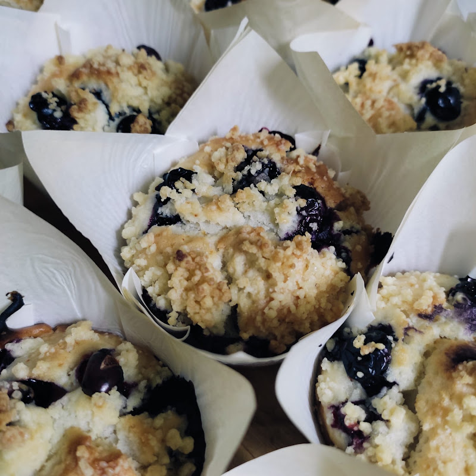

Blueberry Muffins

Description
Light and fluffy blueberry muffins
Ingredients (Makes about 10 muffins)
Muffins:
- 240 g plain flour
- 130 g sugar
- 8 g baking powder
- 1/2 teaspoon salt
- 300 g plant based yogurt
- 80 ml neutral oil
- 1 tablespoon vanilla extract
- 150 to 200 g blueberries (fresh or frozen)
Crumble:
- 40 g plain flour
- 25 g raw sugar
- 25 g margarine
Steps
- In a bowl, mix the flour and brown sugar.
- Add the margarine then knead the mixture between your fingers until you obtain a sandy dough that crumbles.
- Place in the refrigerator.
- Preheat the oven to 220°C
- In a bowl mix the flour, sugar, baking powder and salt.
- Add the yogurt, oil and vanilla extract then mix quickly without overworking the dough.
- Add the blueberries (keep a small part in order to place them on the surface of the muffins afterwards) then mix gently with the spatula, taking care not to crush the blueberries.
- Place paper liners in the indentations of a muffin tin and pour the batter to fill them 3/4 full.
- Add the remaining blueberries to the surface of the muffins then sprinkle with the crumble.
- Bake for 5 minutes at 220°C then lower the temperature to 180°C and continue cooking for 20 to 30 minutes (time varies depending on the oven, watch closely).
- The muffins are ready when they are lightly browned, well puffed, and the blade of a knife comes out dry when you stick it inside the muffins.
- If using frozen blueberries, let them thaw slightly before using (otherwise they will release too much water and may alter the texture of the muffins).